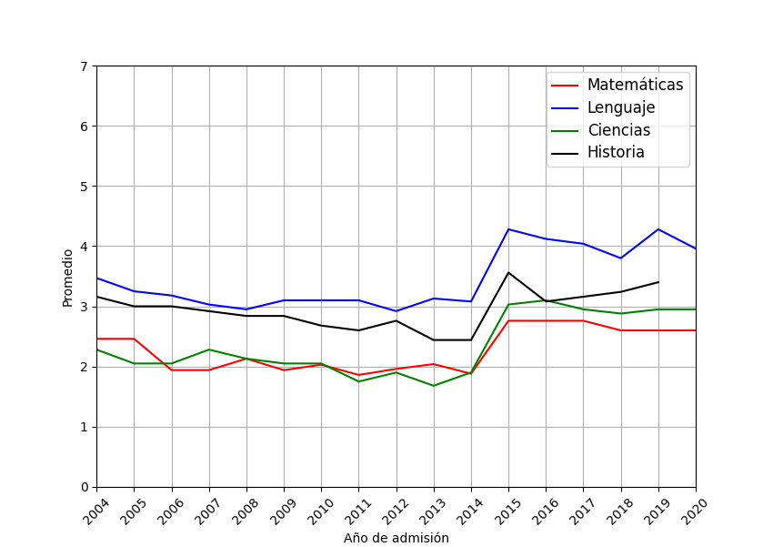

Pueden buscar sus puntajes en peseu.com si no se acuerdan cuánto sacaron.
Convierte puntajes PSU a nota entre 1 y 7 con una escala de 50% y 60%.
Tablas de puntajes obtenidas de la página del Demre.
Todo el cálculo se hace en Javascript en esta misma
página, por si alguien quiere revisarlo.
Reclamos, comentarios quejas y otros al mail jisaa [arroba] puc.cl
Para los que tienen curiosidad, el promedio de la PSU siempre es 500 puntos (con una desviación estándar de 110, truncando entre 150 y 850), la escala se recalcula todos los años para mantener esto.
Desde la PSU 2014 (admisión 2015),
no hay descuento por respuestas malas. Los años ateriores, cada 4 respuestas erróneas, se descontaba una respuesta correcta.
Durante el proceso de admisión 2020, la prueba de Historia fue cancelada por filtración de preguntas.
Les
dejo un gráfico con el promedio de las pruebas desde el 2004 en adelante (usando una escala del 50%):

Por último un gráfico con más detalle de la prueba de matemáticas del año 2015 (admisión 2016).
Convertidor de puntajes PTU admisión 2021.
Fuentes de datos:
Para compartir esta página, el link fácil es bit.do/puntajes